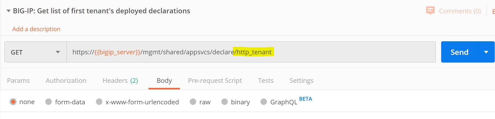
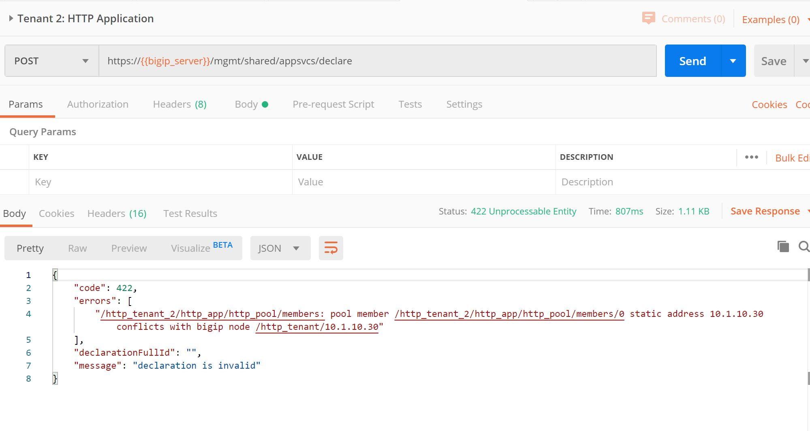
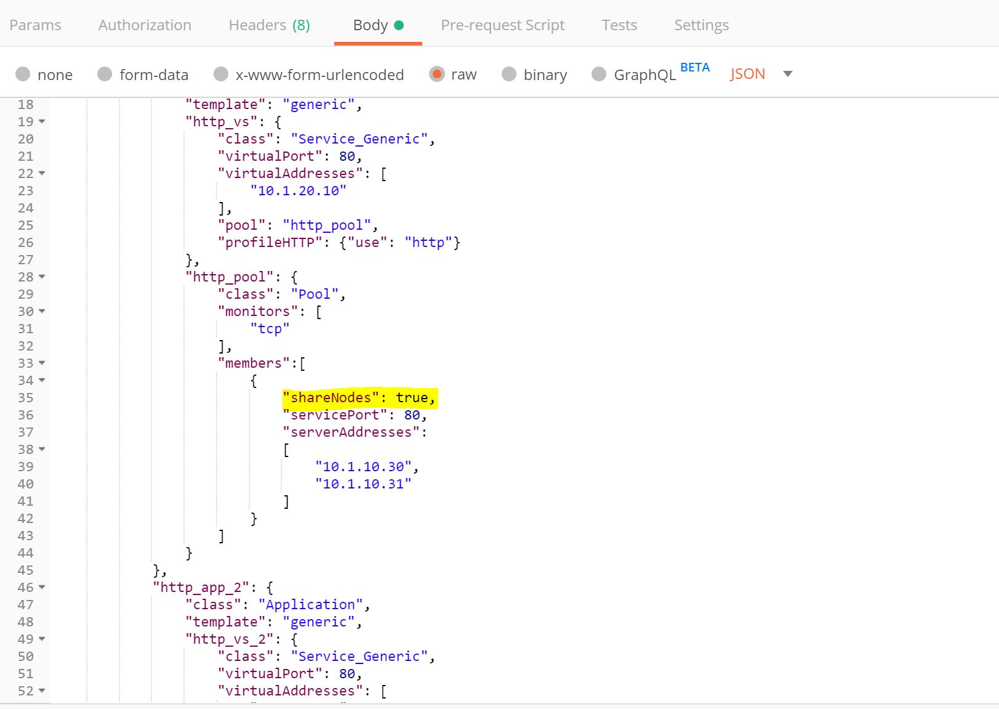
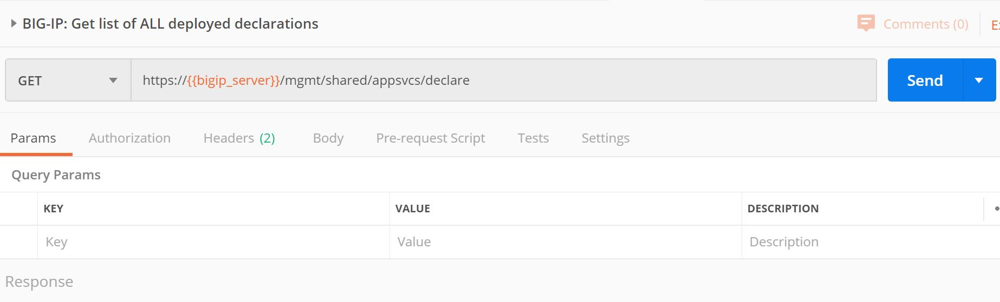

F5 Solutions for Containers > Class 3: Application Deployments with BIG-IP and Application Services (AS3) Source |
Lab 5 - How to work with multiple tenants using AS3¶
In this lab, you will work with multiple tenants on a BIG-IP platform.
Exercise 1 - Deploy Applications for First Tenant
Expand the AS3 collections folder that we imported by clicking on it.
Open the
Lab 5folder.Click and examine the
BIG-IP Authenticatedeclaration. ClickSendand ensure a 200 OK response in the Postman response window.
Locate the
Tenant 1: HTTP Multi-Applications (2 Apps)request in the same folder. If you look at theBodyof the request, you will see a declaration to create 2 applications in the tenant namedhttp_tenant.Click
Sendto send the declaration to the BIG-IP.Confirm the results of the POST, and make sure you receive a result of 200.
Locate the
BIG-IP: Get list of first tenant's deployed declarationsrequest. In the request note that you will only retrieve the applications deployed forhttp_tenanttenant.Click
Sendto retrieve the deployed applications on the BIG-IP.In the response, you will see the declaration of the both applications.
If you login to the BIG-IP, you will see the applications deployed in the
http_tenantpartition.
Exercise 2 - Deploy Application for Second Tenant
Locate the
Tenant 2: HTTP Applicationrequest in the same folder. If you look at theBodyof the request, you will see a declaration to create an application in the tenant namedhttp_tenant_2.Click
Sendto send the declaration to the BIG-IP.You should receive an error
422 Unprocessable Entity. The reason you received this error is that the second tenant is attemping to use the same pool member IP addresses in the declaration. In order to use the same pool members in the second tenant, you must use theShareNodesoption in the pool declaration.Open the declaration
BIG-IP: Delete first tenants declarationsin order to delete the applications for tenanthttp_tenant.Click
Sendto delete the applications.Verify that you received a
HTTP 200 OKresponse.Open the declaration
Tenant 1: HTTP Multi-Applications (2 Apps) - ShareNodes.Scroll down the declaration to see the
ShareNodesoption set totrue. The default setting for this isfalse.Click
Sendto send the updated declaration to the BIG-IP.Verify that you received a
HTTP 200 OKresponse.If you look on the BIG-IP now, you will see the Nodes have been created in the
Commonpartition. This will allow the second tenant to use the same Nodes in its applications.Open the declaration
Tenant 2: HTTP Application. You will notice that this declaration is for a second tenant,http_tenant_2. It also has theShareNodesset totruefor the pool members.Click
Sendto send the updated declaration to the BIG-IP.Verify that you received a
HTTP 200 OKresponse.Locate the
BIG-IP: Get list of ALL deployed declarationsrequest. In the request note that you will retrieve the applications deployed for all tenants.Click
Sendto retrieve the deployed applications on the BIG-IP. If you look at the response, you will see the declaration of the both applications.If you look at the BIG-IP, you will also see a new partition for
http_tenant_2has been added.If you look at the
Nodesin theLocal Trafficsection, you will see that there are two nodes in theCommonpartition.Open the declaration
BIG-IP: Delete ALL declarations. This will delete all applications for all tenants on the BIG-IP.Click
Sendto send the updated declaration to the BIG-IP.Verify that you received a
HTTP 200 OKresponse.